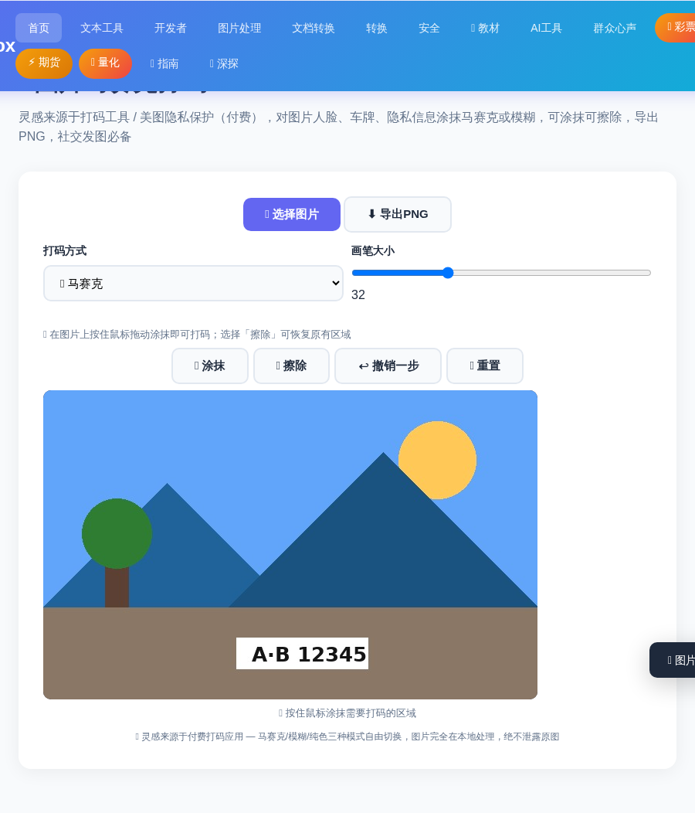
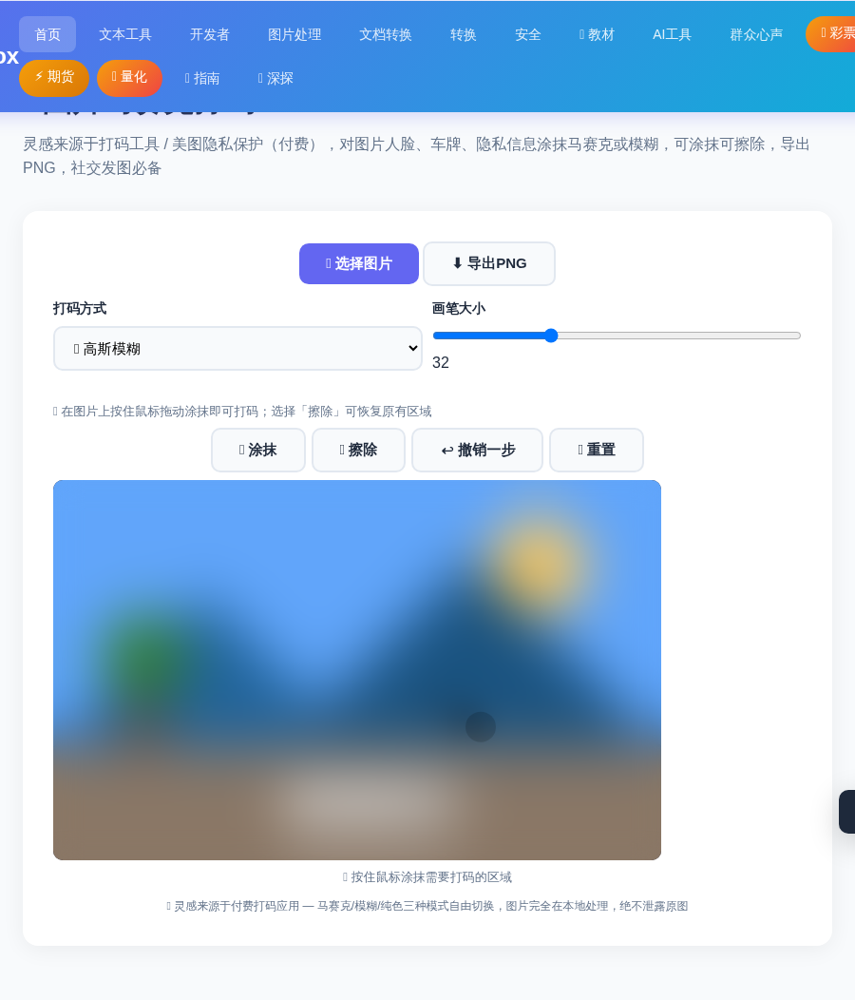

发朋友圈晒聊天记录，要遮住姓名电话；拍下爱车，要盖掉车牌号；晒娃的照片，也得给小朋友的脸打码……保护隐私是每个现代人的必修课，而打码就是最常用的方式。
现在用 ToolBox 的 在线图片马赛克打码工具，上传图片就能直接在浏览器里涂抹：🧩 马赛克、🌫️ 高斯模糊、⬛ 纯色涂块三种打码方式，画错了还能擦除重来，导出高清 PNG。纯本地处理，图片不会上传到任何服务器。
进入 ToolBox 首页，点击「🖼️ 图片处理」分类，找到「🧩 图片马赛克打码」工具卡片进入（也可在首页搜索「马赛克」快速定位）。
点击「📂 选择图片」按钮，从电脑里选一张需要打码的照片——聊天截图、证件照、街拍照片都可以。图片加载后立即显示在画布上，等待涂抹。

工具提供 3 种打码方式，在顶部下拉框切换：
用鼠标（或手指）在需要遮住的位置按住拖动画一画，打码立刻生效。画笔大小可以调节，粗笔画大区域、细笔画小细节。下图是用马赛克涂抹了相当隐私区域的效果：
画错了？工具内置擦除功能，把多余的打码擦掉重画；每一步操作都支持撤销，返回到之前的任意状态。
满意之后点击「⬇️ 导出PNG」，处理好的图片立即保存到你的电脑。下图是用高斯模糊打码的效果：

凡是需要公开分享又涉及隐私的图片，都建议先打码再发。这些场景直接用得上：
Q：图片会上传到服务器吗？会不会泄露隐私？
不会。整张图片的处理全部在浏览器本地完成，图片不会上传到任何服务器，打码后再公开发布更安心。
Q：画错了怎么办？可以撤销吗？
可以。工具内置橡皮擦和撤销功能，画错的打码可以擦掉重画，也可以一步步撤销到底，操作非常灵活。
Q：支持哪些图片格式？导出的清晰度如何？
支持常见的 JPG、PNG、WebP 等浏览器可读的图片格式；导出为高清 PNG，方便公众号、朋友圈等任何场景使用。
📌 有图要发？先花 30 秒给隐私打个码
🧩 去图片打码 →